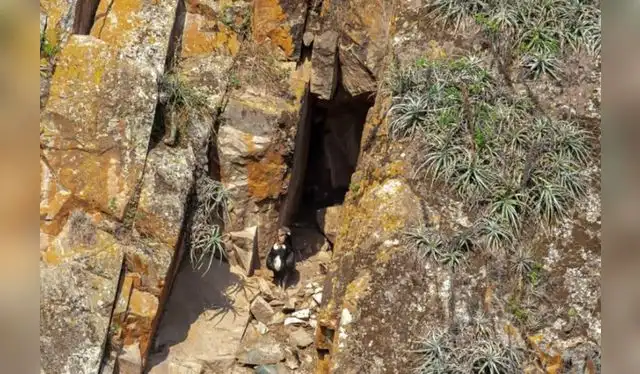

Avistamiento del condor
Avistamiento del Cóndor de los Andes: En las montañas de El Cerrito es posible observar el majestuoso cóndor de los Andes en su hábitat natural, convirtiéndose en uno de los principales atractivos turísticos del municipio.
📍 Zona rural de El Cerrito, Santander.